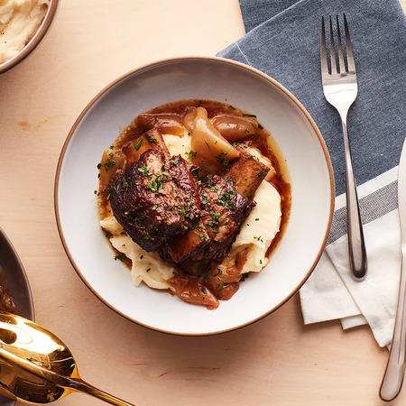

Slow Cooked Ranch Short Ribs

Description
Beef short ribs are coated in ranch seasoning and slow cooked
with onions, red wine, and mustard until irresistibly tender.
Ingredients
- 4 pounds bone-in beef short ribs
- 1 teaspoon Hidden Valley® Original Ranch® Salad Dressing & Seasoning Mix
- 2 tablespoons olive oil
- 2 onions, quartered
- 1 cup red wine
- 2 tablespoons Dijon mustard
- Kosher salt and ground black pepper, to taste
Description
- Place short ribs in a Glad® zipper bag and sprinkle with the Hidden Valley® Original Ranch® Salad Dressing and Seasoning Mix. Seal and toss until the short ribs are evenly coated.
- In a large pot or Dutch oven, heat the olive oil until very hot but not smoking. Brown the short ribs on all sides (you may need to do this in two batches), about 10 to 12 minutes total.
- Transfer to a slow cooker. Nestle the onions in and around the short ribs. Mix the red wine and mustard together and pour over the top. Cover the slow cooker.
- Cook on low for 8 hours or high for 4 hours. Skim as much fat as possible from the top. Season with salt and pepper. Serve over noodles, rice or potatoes.
Back to Top
Back To Main Page